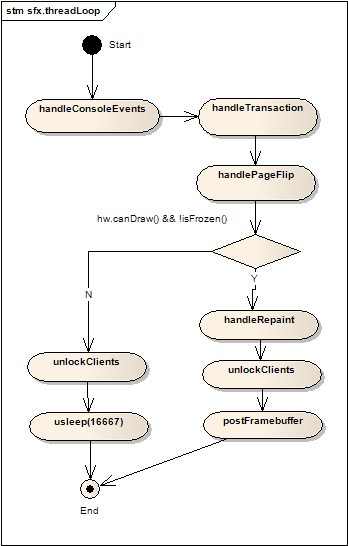
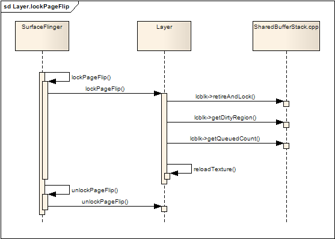
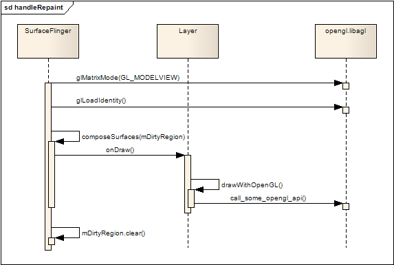

SurfaceFlinger工作线程
概述
-
SurfaceFlinger继承了Thread类，自然也继承了Thread类的threadLoop方法，SurfaceFlinger工作线程的主代码都在threadLoop()方法中。
-
工作线程启动后，基类Thread会循环地调用threadLoop方法，SurfaceFlinger的 threadLoop()主要是要完成系统中各个Layer(Surface)进行混合(compose)，然后不停地把一帧帧混合好的图像数据传送到显示设备中。

渲染线程
SurfaceFlinger::threadLoop
bool SurfaceFlinger::threadLoop()
{
waitForEvent();
// check for transactions
if (UNLIKELY(mConsoleSignals)) {
handleConsoleEvents();
}
if (LIKELY(mTransactionCount == 0)) {
// if we're in a global transaction, don't do anything.
const uint32_t mask = eTransactionNeeded | eTraversalNeeded;
uint32_t transactionFlags = getTransactionFlags(mask);
if (LIKELY(transactionFlags)) {
handleTransaction(transactionFlags);
}
}
// post surfaces (if needed)
handlePageFlip();
const DisplayHardware& hw(graphicPlane(0).displayHardware());
if (LIKELY(hw.canDraw() && !isFrozen())) {
......
// repaint the framebuffer (if needed)
const int index = hw.getCurrentBufferIndex();
GraphicLog& logger(GraphicLog::getInstance());
handleRepaint();
// inform the h/w that we're done compositing
hw.compositionComplete();
postFramebuffer();
} else {
// pretend we did the post
hw.compositionComplete();
usleep(16667); // 60 fps period
}
return true;
}
状态变化处理
-
因为Layer的混合是在线程中进行的，而混合的过程中，应用程序或者系统可能会改变Layer的状态，例如屏幕旋转、增加或删除Layer、某个Layer可见或不可见，为了使这些变动不会破坏当前正在进行的混合动作，SurfaceFlinger维护着两个Layer列表：
-
mCurrentState.layersSortedByZ ---- 当前系统最新的Layer列表
-
mDrawingState.layersSortedByZ ---- 本次混合操作使用的Layer列表
-
handleTransaction就是根据Layer列表的这些状态的变化，计算是否有可见区域内需要更新，并设置状态变量mVisibleRegionsDirty，然后把mCurrentState赋值给mDrawingState，最后释放已经被丢弃的Layer
-
上一次混合过程中，可能应用程序释放了一个Layer，可是mDrawingState正在使用，不能马上销毁，所以要等到本次混合前才能做出销毁的动作。
-
如果Layer的大小有变化并且可见，Layer的handleTransaction将会重新分配缓冲区，并且冻结SurfaceFlinger后续的混合操作，也就是屏幕的内容本次将不会刷新，直到下一个循环的handlePageFlip阶段才解除冻结。
SurfaceFlinger::handleTransaction
void SurfaceFlinger::handleTransaction(uint32_t transactionFlags)
{
Vector< sp<LayerBase> > ditchedLayers;
{
......
// 调用handleTransactionLocked
handleTransactionLocked(transactionFlags, ditchedLayers);
......
}
// 销毁不需要显示的Layer
const size_t count = ditchedLayers.size();
for (size_t i=0 ; i<count ; i++) {
if (ditchedLayers[i] != 0) {
ditchedLayers[i]->ditch();
}
}
}
SurfaceFlinger::handleTransactionLocked
void SurfaceFlinger::handleTransactionLocked(
uint32_t transactionFlags, Vector< sp<LayerBase> >& ditchedLayers)
{
const LayerVector& currentLayers(mCurrentState.layersSortedByZ);
const size_t count = currentLayers.size();
const bool layersNeedTransaction = transactionFlags & eTraversalNeeded;
if (layersNeedTransaction) {
for (size_t i=0 ; i<count ; i++) {
const sp<LayerBase>& layer = currentLayers[i];
uint32_t trFlags = layer->getTransactionFlags(eTransactionNeeded);
// 不需要更新则continue
if (!trFlags) continue;
// 需要更新则调用Layer::doTransaction，并设置mVisibleRegionsDirty为true
const uint32_t flags = layer->doTransaction(0);
if (flags & Layer::eVisibleRegion)
mVisibleRegionsDirty = true;
}
}
if (transactionFlags & eTransactionNeeded) {
// 如果布局变化，则重新计算更新范围并刷新
if (mCurrentState.orientation != mDrawingState.orientation) {
const int dpy = 0;
const int orientation = mCurrentState.orientation;
const uint32_t type = mCurrentState.orientationType;
GraphicPlane& plane(graphicPlane(dpy));
plane.setOrientation(orientation);
// update the shared control block
const DisplayHardware& hw(plane.displayHardware());
volatile display_cblk_t* dcblk = mServerCblk->displays + dpy;
dcblk->orientation = orientation;
dcblk->w = plane.getWidth();
dcblk->h = plane.getHeight();
mVisibleRegionsDirty = true;
mDirtyRegion.set(hw.bounds());
}
if (mCurrentState.freezeDisplay != mDrawingState.freezeDisplay) {
mFreezeDisplay = mCurrentState.freezeDisplay;
if (mFreezeDisplay)
mFreezeDisplayTime = 0;
}
if (currentLayers.size() > mDrawingState.layersSortedByZ.size()) {
mVisibleRegionsDirty = true;
}
if (mLayersRemoved) {
mLayersRemoved = false;
mVisibleRegionsDirty = true;
const LayerVector& previousLayers(mDrawingState.layersSortedByZ);
const size_t count = previousLayers.size();
for (size_t i=0 ; i<count ; i++) {
const sp<LayerBase>& layer(previousLayers[i]);
if (currentLayers.indexOf( layer ) < 0) {
// 将需要丢弃的Layer加入到容器返回给调用者
ditchedLayers.add(layer);
mDirtyRegionRemovedLayer.orSelf(layer->visibleRegionScreen);
}
}
}
}
commitTransaction();
}
翻转处理
-
该阶段会遍历各个Layer，在每个Layer中，取得并锁住该Layer的frontBuffer，然后利用frontBuffer中的图像数据生成该Layer的2D贴图(Texture)，并且计算更新区域，为后续的混合操作做准备。
-
Layer::lockPageFlip()首先通过SharedBufferServer类的成员变量lcblk，调用retireAndLock取得该Layer当前可用的frontBuffer，然后通过 reloadTexture方法生成openGLES的纹理贴图，最后通过unlockPageFlip完成更新区域的Layer坐标到屏幕坐标的变换。
SurfaceFlinger::handlePageFlip
void SurfaceFlinger::handlePageFlip()
{
bool visibleRegions = mVisibleRegionsDirty;
LayerVector& currentLayers = const_cast<LayerVector&>(
mDrawingState.layersSortedByZ);
// 处理每一个Layer
visibleRegions |= lockPageFlip(currentLayers);
const DisplayHardware& hw = graphicPlane(0).displayHardware();
const Region screenRegion(hw.bounds());
if (visibleRegions) {
Region opaqueRegion;
computeVisibleRegions(currentLayers, mDirtyRegion, opaqueRegion);
mVisibleLayersSortedByZ.clear();
const LayerVector& currentLayers(mDrawingState.layersSortedByZ);
size_t count = currentLayers.size();
mVisibleLayersSortedByZ.setCapacity(count);
for (size_t i=0 ; i<count ; i++) {
if (!currentLayers[i]->visibleRegionScreen.isEmpty())
mVisibleLayersSortedByZ.add(currentLayers[i]);
}
#ifdef USE_COMPOSITION_BYPASS
sp<LayerBase> bypassLayer;
const size_t numVisibleLayers = mVisibleLayersSortedByZ.size();
if (numVisibleLayers == 1) {
const sp<LayerBase>& candidate(mVisibleLayersSortedByZ[0]);
const Region& visibleRegion(candidate->visibleRegionScreen);
const Region reminder(screenRegion.subtract(visibleRegion));
if (reminder.isEmpty()) {
// fullscreen candidate!
bypassLayer = candidate;
}
}
setBypassLayer(bypassLayer);
#endif
mWormholeRegion = screenRegion.subtract(opaqueRegion);
mVisibleRegionsDirty = false;
}
unlockPageFlip(currentLayers);
mDirtyRegion.andSelf(screenRegion);
}
SurfaceFlinger::lockPageFlip
bool SurfaceFlinger::lockPageFlip(const LayerVector& currentLayers)
{
bool recomputeVisibleRegions = false;
size_t count = currentLayers.size();
sp<LayerBase> const* layers = currentLayers.array();
for (size_t i=0 ; i<count ; i++) {
const sp<LayerBase>& layer(layers[i]);
layer->lockPageFlip(recomputeVisibleRegions);
}
return recomputeVisibleRegions;
}
Layer::lockPageFlip

void Layer::lockPageFlip(bool& recomputeVisibleRegions)
{
ClientRef::Access sharedClient(mUserClientRef);
SharedBufferServer* lcblk(sharedClient.get());
if (!lcblk) {
// client died
recomputeVisibleRegions = true;
return;
}
// 获取当前可用的buffer，如果没有可用buffer则返回
ssize_t buf = lcblk->retireAndLock();
if (buf == NOT_ENOUGH_DATA) {
return;
}
......
// 创建可用的frontBuffer
sp<GraphicBuffer> newFrontBuffer(getBuffer(buf));
if (newFrontBuffer != NULL) {
// get the dirty region
// compute the posted region
const Region dirty(lcblk->getDirtyRegion(buf));
mPostedDirtyRegion = dirty.intersect( newFrontBuffer->getBounds() );
// update the layer size and release freeze-lock
const Layer::State& front(drawingState());
if (newFrontBuffer->getWidth() == front.requested_w &&
newFrontBuffer->getHeight() == front.requested_h)
{
if ((front.w != front.requested_w) ||
(front.h != front.requested_h))
{
// Here we pretend the transaction happened by updating the
// current and drawing states. Drawing state is only accessed
// in this thread, no need to have it locked
Layer::State& editDraw(mDrawingState);
editDraw.w = editDraw.requested_w;
editDraw.h = editDraw.requested_h;
// We also need to update the current state so that we don't
// end-up doing too much work during the next transaction.
// NOTE: We actually don't need hold the transaction lock here
// because State::w and State::h are only accessed from
// this thread
Layer::State& editTemp(currentState());
editTemp.w = editDraw.w;
editTemp.h = editDraw.h;
// recompute visible region
recomputeVisibleRegions = true;
}
// we now have the correct size, unfreeze the screen
mFreezeLock.clear();
}
// get the crop region
setBufferCrop( lcblk->getCrop(buf) );
// get the transformation
setBufferTransform( lcblk->getTransform(buf) );
} else {
// this should not happen unless we ran out of memory while
// allocating the buffer. we're hoping that things will get back
// to normal the next time the app tries to draw into this buffer.
// meanwhile, pretend the screen didn't update.
mPostedDirtyRegion.clear();
}
if (lcblk->getQueuedCount()) {
// signal an event if we have more buffers waiting
mFlinger->signalEvent();
}
/* a buffer was posted, so we need to call reloadTexture(), which
* will update our internal data structures (eg: EGLImageKHR or
* texture names). we need to do this even if mPostedDirtyRegion is
* empty -- it's orthogonal to the fact that a new buffer was posted,
* for instance, a degenerate case could be that the user did an empty
* update but repainted the buffer with appropriate content (after a
* resize for instance).
*/
reloadTexture( mPostedDirtyRegion );
}
SurfaceFlinger::unlockPageFlip
void SurfaceFlinger::unlockPageFlip(const LayerVector& currentLayers)
{
const GraphicPlane& plane(graphicPlane(0));
const Transform& planeTransform(plane.transform());
size_t count = currentLayers.size();
sp<LayerBase> const* layers = currentLayers.array();
for (size_t i=0 ; i<count ; i++) {
const sp<LayerBase>& layer(layers[i]);
layer->unlockPageFlip(planeTransform, mDirtyRegion);
}
}
Layer::unlockPageFlip
void Layer::unlockPageFlip(
const Transform& planeTransform, Region& outDirtyRegion)
{
Region dirtyRegion(mPostedDirtyRegion);
if (!dirtyRegion.isEmpty()) {
mPostedDirtyRegion.clear();
// The dirty region is given in the layer's coordinate space
// transform the dirty region by the surface's transformation
// and the global transformation.
const Layer::State& s(drawingState());
const Transform tr(planeTransform * s.transform);
dirtyRegion = tr.transform(dirtyRegion);
// At this point, the dirty region is in screen space.
// Make sure it's constrained by the visible region (which
// is in screen space as well).
dirtyRegion.andSelf(visibleRegionScreen);
outDirtyRegion.orSelf(dirtyRegion);
}
if (visibleRegionScreen.isEmpty()) {
// an invisible layer should not hold a freeze-lock
// (because it may never be updated and therefore never release it)
mFreezeLock.clear();
}
}
重画处理
-
handleRepaint首先重置了openGL的观察矩阵，然后遍历mDrawingState.layersSortedByZ 中的Layer列表，调用每个Layer的onDraw方法，在onDraw方法中，会调用drawWithOpenGL()方法，将在handlePageFlip阶段生成的贴图混合到OpenGL的主表面，最后handleRepaint把需要刷新的区域清除。

SurfaceFlinger::handleRepaint
void SurfaceFlinger::handleRepaint()
{
// compute the invalid region
mInvalidRegion.orSelf(mDirtyRegion);
if (mInvalidRegion.isEmpty()) {
// nothing to do
return;
}
......
// 设置OpenGL
const DisplayHardware& hw(graphicPlane(0).displayHardware());
glMatrixMode(GL_MODELVIEW);
glLoadIdentity();
uint32_t flags = hw.getFlags();
if ((flags & DisplayHardware::SWAP_RECTANGLE) ||
(flags & DisplayHardware::BUFFER_PRESERVED))
{
// we can redraw only what's dirty, but since SWAP_RECTANGLE only
// takes a rectangle, we must make sure to update that whole
// rectangle in that case
if (flags & DisplayHardware::SWAP_RECTANGLE) {
// TODO: we really should be able to pass a region to
// SWAP_RECTANGLE so that we don't have to redraw all this.
mDirtyRegion.set(mInvalidRegion.bounds());
} else {
// in the BUFFER_PRESERVED case, obviously, we can update only
// what's needed and nothing more.
// NOTE: this is NOT a common case, as preserving the backbuffer
// is costly and usually involves copying the whole update back.
}
} else {
if (flags & DisplayHardware::PARTIAL_UPDATES) {
// We need to redraw the rectangle that will be updated
// (pushed to the framebuffer).
// This is needed because PARTIAL_UPDATES only takes one
// rectangle instead of a region (see DisplayHardware::flip())
mDirtyRegion.set(mInvalidRegion.bounds());
} else {
// we need to redraw everything (the whole screen)
mDirtyRegion.set(hw.bounds());
mInvalidRegion = mDirtyRegion;
}
}
if(mDirtyRegion.bounds().right==hw.bounds().bottom)
{
mDirtyRegion.set(hw.bounds());
mInvalidRegion = mDirtyRegion;
}
// compose all surfaces
composeSurfaces(mDirtyRegion);
// clear the dirty regions
mDirtyRegion.clear();
}
SurfaceFlinger::composeSurfaces
void SurfaceFlinger::composeSurfaces(const Region& dirty)
{
if (UNLIKELY(!mWormholeRegion.isEmpty())) {
// should never happen unless the window manager has a bug
// draw something...
drawWormhole();
}
const Vector< sp<LayerBase> >& layers(mVisibleLayersSortedByZ);
const size_t count = layers.size();
for (size_t i=0 ; i<count ; ++i) {
const sp<LayerBase>& layer(layers[i]);
const Region clip(dirty.intersect(layer->visibleRegionScreen));
if (!clip.isEmpty()) {
layer->draw(clip);
}
}
}
刷新显示
SurfaceFlinger::postFramebuffer
void SurfaceFlinger::postFramebuffer()
{
if (!mInvalidRegion.isEmpty()) {
const DisplayHardware& hw(graphicPlane(0).displayHardware());
......
// 调用HAL层俄flip刷新屏幕
hw.flip(mInvalidRegion);
......
mInvalidRegion.clear();
}
}
Client/Server的通知机制
-
前面提到Surface在解锁缓冲区后，会调用SurfaceClient::signalServer方法通知SurfaceFlinger。而该调用是通过其成员ISurfaceComposer接口对象通过Binder机制调用SurfaceFlinger端的signalServer方法。
-
SurfaceFlinger内部会维护一个消息队列，waitForEvent会循环等待消息到来，其实是在条件变量上等待被唤醒。
-
当waitForEvent返回后，SurfaceFlinger则继续走threadLoop的调用流程。
Surface::queueBuffer
int Surface::queueBuffer(android_native_buffer_t* buffer)
{
......
if (err == NO_ERROR) {
mClient.signalServer();
}
return err;
}
SurfaceFlinger::signal
void SurfaceFlinger::signal() const {
// 通过Binder的IPC调用SurfaceFlinger::signal
const_cast<SurfaceFlinger*>(this)->signalEvent();
}
SurfaceFlinger::signalEvent
void SurfaceFlinger::signalEvent() {
// 触发条件变量，让waitForEvent返回消息
mEventQueue.invalidate();
}
SurfaceFlinger::waitForEvent
void SurfaceFlinger::waitForEvent()
{
while (true) {
......
sp<MessageBase> msg = mEventQueue.waitMessage(timeout);
......
if (msg != 0) {
switch (msg->what) {
case MessageQueue::INVALIDATE:
// invalidate message, just return to the main loop
return;
}
}
}
}
{kind=link}
{kind=link}
{kind=link}